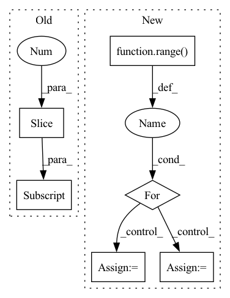

Pattern ID :30992
Before Change
// Select data
data, labels = self.dataloader[self.data_idx // self.dataloader.batch_size]
data, labels = data[0:self.num_data_points], labels[0:self.num_data_points]
data = data.to(**setup)
labels = labels.to(device=setup["device"])
// Compute local updatesAfter Change
data = []
labels = []
pointer = self.data_idx
for data_point in range( self.num_data_points):
datum, label = self.dataloader.dataset[pointer]
data += [datum]
labels += [torch.as_tensor(label)]
pointer += server_payload["data"].classes
data = torch.stack(data).to(**self.setup)
labels = torch.stack(labels).to(device=self.setup["device"])
In pattern: SUPERPATTERN
Frequency: 5
Non-data size: 6
Instances Fragment ID: 91037037
Project Name: jonasgeiping/breaching
Commit Name: 9970fc2cd79885d2710383036d5ff70dc67b6b03
Time: 2021-09-05
Author: jonas.geiping@googlemail.com
File Name: breaching/cases/users.py
M Class Name: UserSingleStep
N Class Name: UserSingleStep
M Method Name: compute_local_updates(2)
N Method Name: compute_local_updates(2)
M Parent Class: torch.nn.Module
N Parent Class: torch.nn.Module
M File Name: breaching/cases/users.py
N File Name: breaching/cases/users.py
M Start Line: 43
M End Line: 51
N Start Line: 43
N End Line: 57
Before Change
mask = tf.zeros([height, width]).numpy() // need to assign values
mask_value = 0 // value is ignored
for hh_start, hh_end in zip(hh_split[:-1], hh_split[1:]):
for ww_start, ww_end in zip(ww_split[:-1] , ww_split[1:]):
mask[hh_start:hh_end, ww_start:ww_end] = mask_value
mask_value += 1
mask = tf.convert_to_tensor(mask)After Change
hh_split = [0, height - window_height, height - shift_height, height]
ww_split = [0, width - window_width, width - shift_width, width]
mask_value, total_ww, mask = 0, len(ww_split) - 1, []
for hh_id in range( len(hh_split) - 1):
hh = hh_split[hh_id + 1] - hh_split[hh_id]
rr = [tf.zeros([hh, ww_split[id + 1] - ww_split[id]]) + (id + mask_value) for id in range(total_ww)]
mask.append(tf.concat(rr, axis=-1))
mask_value += total_ww
mask = tf.concat(mask, axis=0)
// return mask
Fragment ID: 91036973
Project Name: leondgarse/keras_cv_attention_models
Commit Name: bcd22fc3dc9889d71afdf773b78b74d3211754be
Time: 2022-04-06
Author: leondgarse@gmail.com
File Name: keras_cv_attention_models/swin_transformer_v2/swin_transformer_v2.py
M Class Name: AnonimousClass
N Class Name: AnonimousClass
M Method Name: make_window_attention_mask(6)
N Method Name: make_window_attention_mask(6)
M Parent Class:
N Parent Class:
M File Name: keras_cv_attention_models/swin_transformer_v2/swin_transformer_v2.py
N File Name: keras_cv_attention_models/swin_transformer_v2/swin_transformer_v2.py
M Start Line: 111
M End Line: 119
N Start Line: 110
N End Line: 118
Before Change
// get per-coordinate sum of edges endpoints of each panel
// should be close to sum of the equvalent number of pading values (since all of coords are shifted due to normalization\standardization)
// (in case of panels, padding for edge coords should be zero, but I"m using a more generic solution here JIC)
panel_coords_sum = (predicted_panels[el_id][:seq_len, :2] - self.pad_tenzor[:2] ).sum(axis=0)
// batch mean of squared norms of per-panel final points:After Change
shifted_gt_panel = gt_panels[el_id]
min_dist = ((predicted_panels[el_id] - shifted_gt_panel) ** 2).sum()
chosen_panel = shifted_gt_panel
for i in range( 1, num_edges):
shifted_gt_panel = self._rotate_edges(shifted_gt_panel, num_edges)
dist = ((predicted_panels[el_id] - shifted_gt_panel) ** 2).sum()
if dist < min_dist:
min_dist = dist
chosen_panel = shifted_gt_panel
print(min_dist, i)
// update choice Fragment ID: 91036988
Project Name: maria-korosteleva/garment-pattern-estimation
Commit Name: d5249e2d1149a36a28f875d31d10930c53b178d0
Time: 2021-04-13
Author: mariako@kaist.ac.kr
File Name: nn/metrics.py
M Class Name: PanelShapeOriginAgnosticLoss
N Class Name: PanelShapeOriginAgnosticLoss
M Method Name: __call__(3)
N Method Name: __call__(3)
M Parent Class: PanelLoopLoss
N Parent Class: PanelLoopLoss
M File Name: nn/metrics.py
N File Name: nn/metrics.py
M Start Line: 229
M End Line: 245
N Start Line: 228
N End Line: 261
Before Change
for i in range(1, self.num_bins // 2 + 1):
left_bins.append(norm.ppf(i * mass_per_bin))
left_bins.append(0)
right_bins = [-bin_val for bin_val in left_bins[:-1] ]
right_bins.reverse()
bins = left_bins + right_bins
bin_sizes = [bins[i + 1] - bins[i] for i in range(len(bins) - 1)]After Change
def _get_bins(self, num_bins, mu=0, sigma=1):
bins = []
mass = 0
for path in range( num_bins + 1):
mass += 1 / (num_bins + 2)
bins += [NormalDist(mu=mu, sigma=sigma).inv_cdf(mass)]
bin_sizes = [bins[i + 1] - bins[i] for i in range(len(bins) - 1)]
return bins, bin_sizes
Fragment ID: 91036985
Project Name: jonasgeiping/breaching
Commit Name: 5ec96d942d0c470364343eb3b747ad5cb0977f5d
Time: 2021-10-04
Author: jonas.geiping@googlemail.com
File Name: breaching/cases/malicious_modifications/imprint.py
M Class Name: SparseImprintBlock
N Class Name: SparseImprintBlock
M Method Name: _get_bins(4)
N Method Name: _get_bins(1)
M Parent Class: torch.nn.Module
N Parent Class: torch.nn.Module
M File Name: breaching/cases/malicious_modifications/imprint.py
N File Name: breaching/cases/malicious_modifications/imprint.py
M Start Line: 125
M End Line: 134
N Start Line: 132
N End Line: 138
Before Change
all_support = [self.adj[u_sampled, :]
for _ in range(self.num_layers - 2)]
all_support.append(support)
all_x_u[:-1] = [self.features for _ in range(self.num_layers - 1)]
all_support = self._change_sparse_to_tensor(all_support)
After Change
all_support = [[]] * self.num_layers
cur_out_nodes = v
for layer_index in range( self.num_layers-1, -1, -1):
cur_sampled, cur_support = self._one_layer_sampling(
cur_out_nodes, self.layer_sizes[layer_index])
all_support[layer_index] = cur_support
cur_out_nodes = cur_sampled
all_support = self._change_sparse_to_tensor(all_support)
sampled_X0 = self.features[cur_out_nodes] Fragment ID: 91037016
Project Name: gkunnan97/fastgcn_pytorch
Commit Name: ef1eaaab4d18cefc9b76cfe1e9e4b0a3db9d6f86
Time: 2020-07-18
Author: 2512890036@qq.com
File Name: sampler.py
M Class Name: Sampler_FastGCN
N Class Name: Sampler_FastGCN
M Method Name: sampling(2)
N Method Name: sampling(2)
M Parent Class: Sampler
N Parent Class: Sampler
M File Name: sampler.py
N File Name: sampler.py
M Start Line: 59
M End Line: 73
N Start Line: 56
N End Line: 67